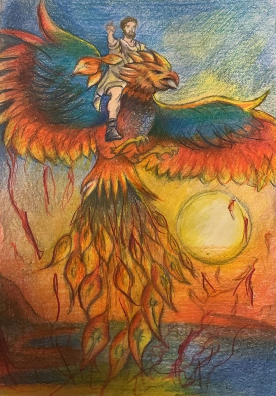

Ben efsanevi kuş Zümrüdü Anka… Bana Simurg da derler. Köklerim Hint mitolojisindeki Garuda’ya kadar gider. Orta Asya Türkleri arasında Alp Kara Kuş olarak da bilinirim. Yeraltındaki bir ağacın tepesinde yaşarım. Her yıl yavrularım fakat bu yavrularımı bu ağacın dibindeki yılan tırmanarak yer. Bu nedenle ağlarım ve gözyaşların gökyüzünden yağmur gibi yağar. Zaman zaman bazı kahramanlar yeraltındaki devlerin peşine düşerek alt dünyaya kadar inerler ve alt dünyadaki yolculukları ya da maceraları sırasında benim yavrularımı dünyaya getirdiğim ağacın yanına da gelirler. Ağacın yanına geldiklerinde bir yılanın ağaca tırmanmakta olduğunu, yavrularımı yemek istediğini görürler. Yılanı ikiye bölüp yavrularımı kurtarırlar. Yavrularım dile gelip onlara benden bahsederler. Yılanı öldüren kahramanlar ben gelmeden önce saklanırlar. Ben yine yavrularımın yendiğini düşünerek ağacın tepesine uçarak gelirim ve gizlenen bu kahramanları görürüm. Öfkeyle saldırıp kahramanlar yutarım fakat yavrularım dile gelip bu kahramanların kendilerini kurtardıklarını söylerler. Bunun üzerine onları kusarım, eskisi gibi sapasağlam olmalarını sağlarım. Yavrularımı kurtaran bu kahramanlara bu iyilikleri karşısında bir iyilik yapmak isterim. Onlar genellikle orta dünyaya yani yeryüzüne çıkmak istediklerini söylerler. Onlara yanlarına tulumlarla su ve et parçaları almalarını söylerim. Bunları bulup getirdiklerinde onları sırtıma bindiririm ve üst dünyaya doğru uçmaya başlarım. “Gak” dediğimde su, “guk” dediğimde et vermelerini sağlarım. Kahramanlar genellikle et parçalarından birini yere düşürürler ve “guk” dediğimde ellerinde et parçası kalmadığı için bacaklarından ya da butlarından bir parça et keserek bana verirler. Ben anlarım bu etin kendilerine ait olduğunu. Orta dünyaya çıkardığım kahramanlar topallayarak yürürler ve ben de bunun sebebi sorarım. Onlar et kalmadığı için kendi bacaklarından ya da butlarından bir parça et kesip verdiklerini söylerler. Ben de bunun üzerine ağzımda tutuğum et parçasını onlara geri veririm, böylece onlar da iyileşmiş olurlar. Efsanelere göre bilgi ağacının dallarında yaşarım ve her şeyi bilirim. Bütün kuşlar bana inanır, başları sıkışında bana başvururlar. Öleceğimi hissettiğimde kendime ağacın kuru dallarından bir yuva yapar, ne olduğu anlaşılamayacak bir yapışkanla yuvayı sıvarım. Bu yuvanın içinde ölümü beklerim. Güneş bütün görkemiyle ortaya çıkıp yuvanın dallarını yaktığında da yanarak ölürüm. Yaptığım yuvada yanarak ölürüm ama her defasında küllerimden yeniden doğarım. Batı mitolojisinde “Phoenix” ya da “Feniks” adıyla yer alırım. (Benimle ilgili bir masal metni için bk. Alangu, 2011: 140-184.)
